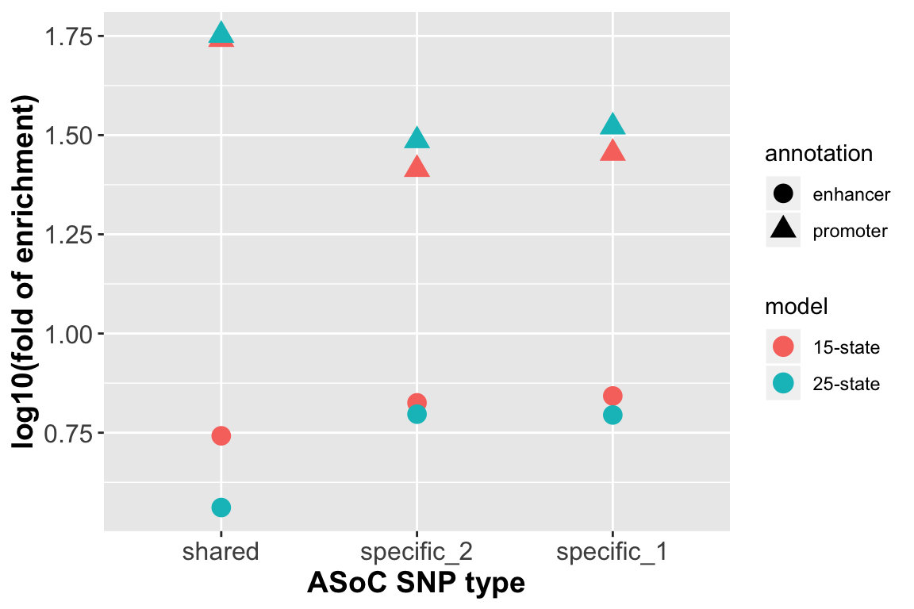

library(data.table)
library(dplyr)
library(ggplot2)
library(knitr)
library(kableExtra)
options(stringsAsFactors = F)Baesed on ASoC SNPs identified in each neuronal cell type (NSC,CN,DN and GA), we have the following hypothesis that cell-type-specific ASoC SNPs are highly enriched in enhancers as oppose to ASoC SNPs shared among several cell types.
To test this hypothesis, we first obtain chromatin state annotation imputed from the Roadmap Epigenomics Project here. To match our neuronal cell types under early development, we pick a matching tissue type: E081 (Fetal Brain Male). We conduct our analysis using both the 15-state model and the 25-state model.
Under the 15-state model, we define a region to be enhancer if its chromatin state belongs to 6 or 7, and promoter if its chromatin state belongs to 1 or 2.
Under the 25-state model, we define a region to be enhancer if its chromatin state falls within 9-19, and promoter if its chromatin state falls within 1-4.
The following table shows the genomic coverage of each state annotated in this way.
p.enh <- 97325800/(3.2*10^9) # 0.03
p.prom <- 22891962/(3.2*10^9) # 0.007
p.enh.new <- 147566576/(3.2*10^9) # 0.046
p.prom.new <- 34972125/(3.2*10^9) # 0.011
coverage <- data.frame(matrix(c(p.prom,p.prom.new,p.enh,p.enh.new),nrow = 2))
names(coverage) <- c('promoter coverage','enhancer coverage')
row.names(coverage) <- c('15-states annotation','25-states annotation')
print(kable(coverage,digits = 4) %>% kable_styling(position = 'center'))| promoter coverage | enhancer coverage | |
|---|---|---|
| 15-states annotation | 0.0072 | 0.0304 |
| 25-states annotation | 0.0109 | 0.0461 |
binom_enrich <- function(p.enh,p.prom,snp_enh,snp_prom,snp_total){
stats <- data.frame(matrix(c(snp_enh/snp_total,p.enh,
snp_prom/snp_total,p.prom),nrow = 2))
names(stats) <- c('enhancer','promoter')
fold_enrich <- (log10(stats[1,]/stats[2,]))
stats[3,] <- fold_enrich
row.names(stats) <- c('# of SNPs in the element','element coverage',
'log10(fold_enrich)')
print(kable(stats,digits = 4) %>% kable_styling(position = 'center'))
test1 <- binom.test(snp_enh,snp_total,p.enh, alternative = 'greater')
cat('Binomial test p value (enhancer):',test1$p.value,'; ')
test2 <- binom.test(snp_prom,snp_total,p.prom, alternative = 'greater')
cat('binomial test p value (promoter):',test2$p.value,'.')
return(fold_enrich)
}We define cell-type-specific ASoC variants to be those that pass FDR < 0.05 in only one cell type.
There are 3618 cell-type-specific ASoC variants.
Out of 3618 cell-type-specific ASoC SNPs, 766 fall into enhancer regions, and 737 fall into promoter regions.
fold.spec15 <- binom_enrich(p.enh,p.prom,766,737,3618)| enhancer | promoter | |
|---|---|---|
| # of SNPs in the element | 0.2117 | 0.2037 |
| element coverage | 0.0304 | 0.0072 |
| log10(fold_enrich) | 0.8427 | 1.4545 |
Binomial test p value (enhancer): 0 ; binomial test p value (promoter): 0 .
Out of 3618 cell-type-specific ASoC SNPs, 1040 fall into enhancer regions, and 1312 fall into promoter regions.
fold.spec25 <- binom_enrich(p.enh.new,p.prom.new,1040,1312,3618)| enhancer | promoter | |
|---|---|---|
| # of SNPs in the element | 0.2875 | 0.3626 |
| element coverage | 0.0461 | 0.0109 |
| log10(fold_enrich) | 0.7947 | 1.5209 |
Binomial test p value (enhancer): 0 ; binomial test p value (promoter): 0 .
We define cell-type-specific ASoC variants to be those that pass FDR < 0.05 in one cell type, while having p value > 0.05 in all other cell types.
There are 2237 cell-type-specific ASoC variants.
Out of 2237 cell-type-specific ASoC SNPs, 455 fall into enhancer regions, and 415 fall into promoter regions.
fold.spec_new15 <- binom_enrich(p.enh,p.prom,455,415,2237)| enhancer | promoter | |
|---|---|---|
| # of SNPs in the element | 0.2034 | 0.1855 |
| element coverage | 0.0304 | 0.0072 |
| log10(fold_enrich) | 0.8253 | 1.4138 |
Binomial test p value (enhancer): 9.229207e-226 ; binomial test p value (promoter): 0 .
Out of 2237 cell-type-specific ASoC SNPs, 646 fall into enhancer regions, and 749 fall into promoter regions.
fold.spec_new25 <- binom_enrich(p.enh.new,p.prom.new,646,749,2237)| enhancer | promoter | |
|---|---|---|
| # of SNPs in the element | 0.2888 | 0.3348 |
| element coverage | 0.0461 | 0.0109 |
| log10(fold_enrich) | 0.7967 | 1.4862 |
Binomial test p value (enhancer): 3.005193e-314 ; binomial test p value (promoter): 0 .
fold.df1 <- rbind(fold.shared15,fold.spec_new15,fold.spec15)
fold.df2 <- rbind(fold.shared25,fold.spec_new25,fold.spec25)
fold.ggplot <- data.frame(snp.type =
rep(c('shared','specific_2','specific_1'),time = 4))
fold.ggplot$fold <- c(fold.df1$enhancer,fold.df1$promoter,
fold.df2$enhancer,fold.df2$promoter)
fold.ggplot$annotation <- factor(rep(c('enhancer','promoter',
'enhancer','promoter'),each = 3))
fold.ggplot$model <- factor(rep(c('15-state','25-state'),each = 6))
fold.ggplot$snp.type <- factor(fold.ggplot$snp.type,
levels = c('shared','specific_2','specific_1'))
ggplot(data = fold.ggplot, aes(x=snp.type,y=fold, color=model, shape=annotation)) +
geom_point(size = 4) + labs(x = 'ASoC SNP type',y = 'log10(fold of enrichment)') +
theme(axis.text=element_text(size=12),axis.title=element_text(size=14,face="bold"))